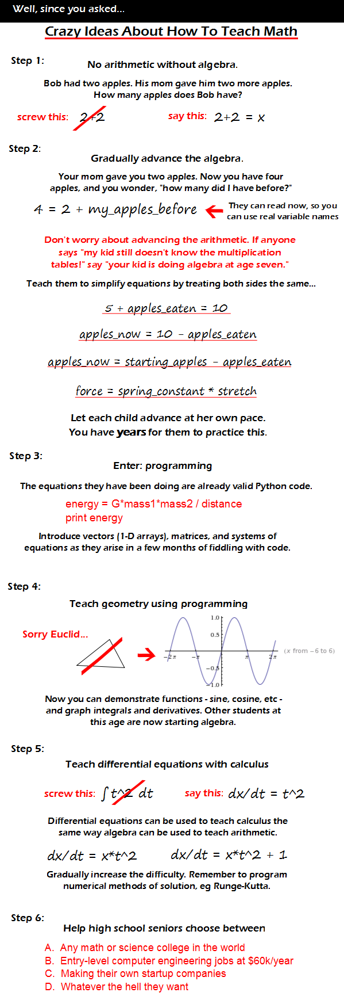

Comic JK 831
When I Feel Like It
⇤
<
?
>
⇥

⇤
<
?
>
⇥
Forum
.
RSS
.
Digg
.
Facebook
.
Reddit
.
Twitter
.
Stumbleupon
The idea of not "Learning" the multiplication facts (or Table, if you will) is rather short sighted. Not knowing multiplication facts will greatly hinder you in grasping factoring which comes a bit later. I personally think we should introduce the concept of f(x) much earlier, as people tend to go slack-jawed when that comes up. Quite frankly, I wouldn't be super opposed to trying something like this. Worst case scenario: kids wind up as mathematically illiterate as most other kids. We don't have a lot to lose (and when kids in Jr. High do not know what half of 16 is... we REALLY don't have anything to lose by trying something different). > half of 16? It's 1 or 6, right? >>You're not far off from the I don't buy it. Everyone reading this has done it the old fashion way. I do believe in letting tools make it easier once you understand the process. BTW my Physics degree required Linear Algebra not Dif EQ's. Thank the God Particle. We also had to deal with some other crazy math I have since forgotten, but could probably relearn it if need be. This is scarily similar to how I learned math. Definitely not at school. Really, for me the hardest thing was changing from notation I used when programming to notation my math teachers expected. Which was harder than you'd expect after I'd been doing supposedly 'advanced' stuff for years while making games. WTF is with the geometry section? That's not teaching geometry; that's throwing out geometry and teaching calculus instead. Geometry is an important branch of math; you can't just introduce area, slope, and the trig functions and call it a day. > I never learned geometry, and I have finished the calculus series and am a physics/math double major with honors in my 4th year. Geometry is rather pointless if you have trig.... >> you need geometry to translate a lot of problems to equations but I agree (with the comic) that it is given too much importance in schools >>>Geometry is not pointless. It is the foundation of all mathematics and is a valid approach to teaching mathematical concepts. Not all math should be focused on computation. Screw the Runge-Kutta method. Teach them to solve the equation rather than assume there is no analytic solution. I love the idea of teaching simple math as algebra. >+1. I have volunteered in a classroom, and every couple of weeks I kept asking "Have you learned algebra yet? This is easy with algebra!" AAHHH! AAAHHHH! RUNGE-KUTTA!!!! Do you know how LONG it took me to FORGET that? I used to wake up screaming! Welp, there goes years of therapy... +1 i was planning a similar approach for my 1yo, i will be modding to include some of your suggestions! tyvm! New math, new math, it won't do you a bit of good to review math - it's so simple, so very simple, that only a child can do it! >+1 the "sorry euclid" portion displays, IMHO, a pretty serious misunderstanding of what is actually involved in learning geometry. the last thing you want in the world is a student taking the idea that cartesian coordinates are some fundamental characteristic of geometry. "It must be possible to replace in all geometric statements the words point, line, plane by table, chair, beer mug." Hilbert. i reckon you could substitute dodgson for euclid in that vein. I Nice ideas. But people in murca are too thick to implement this. This is such a good idea! I really wish that this could be implemented but i truly doubt that it will, huge changes like this take a lot of money and time. This is the kind of thing we really should be teaching kids. Choices A and B may be valid. Startups require more than math skills, as does "whatever the hell they want" -- other than A or B. loling programming at an early age is genius... and having a general population who have more than a vague idea what is in their smart phone they 0 - apples mom gave me = 5, 5 * apples mom gave me = 10, apples mom gave me x the apples I had in the first place = 10. I reinvented the wheel! :) I'm so smart. This is a pretty good idea, but there is so much utility in Euclidian geometry. I understand that this is to promote computer based jobs, but engineers need to know Euclidian geometry. Even then as a bioarchaeologist, I use Euclidian geometry all the time. I was with you as far as the Geometry part. As mentioned several times above, it is still somewhat important and should certainly be kept in schools. The fundamental understanding of how Tan, Sine and Cos are made can be explained through the most basic of Trig. This is something that is quite abstract and taught poorly where I'm from. I think a stronger emphasis should be made there so as to reduce confusion when they're brought up again and again in a lot of areas in engineering (A robotics student) Thank you.